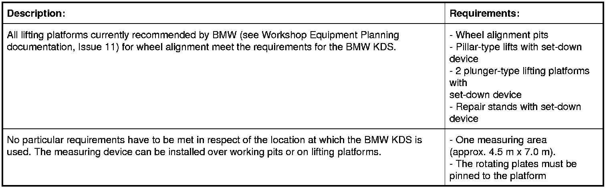
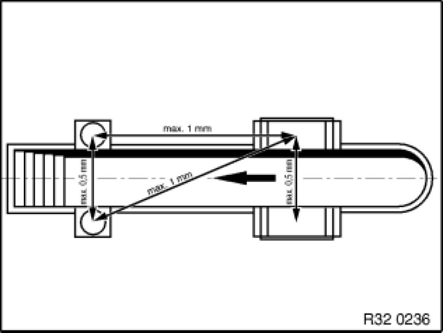

4. Workstation
4. Workstation
4.1 Environment


The support surfaces for the rotating and sliding plates may only display the following maximum height difference:
- from left to right ± 0.5 mm
- from front to back ± 1.0 mm
- diagonally ± 1.0 mm.
Note:
A difference in the height of the rotary plates of ± 2 mm from left to right results in a measuring error of 4.8° in the camber.
As a comparison: The camber tolerance on the E36 is ± 10'. The tyre tread difference or varying tyre pressure cause measuring errors of the same magnitude.
4.2 Preconditions for alignment
When carrying out the wheel alignment, the front and rear wheels must be centred on the rotating and sliding plates in order that all wheel suspensions remain free of tension during the steering routine and adjustment work. As a result, the rotating and sliding plates for the relevant wheel bases and track widths of the vehicle to be aligned must be moved.
4.3 Measuring tolerance
All measuring tolerances are system tolerances. This means that the sum of all individual tolerances gives the value shown in the example. Example of camber: Quick-acting clamp + measuring sensor + computer = 1' at a measuring range of ± 3° (all BMW vehicles are within this measuring range).
4.4 Levelling the measuring station
The manufacturers of the BMW KDS (Beissbarth / Bosch) are able to measure the measuring area to the required accuracy using levelling devices. Any "normal" water level is not suitable for this. Lifting platforms must be levelled under load so that the uneven deflection in the travel rails is taken into account.
Important:
Adjustment work for the lifting platform concerned must be executed by a specialist (manufacturer's after-sales service).